直近1週間の更新
11/28 (土)
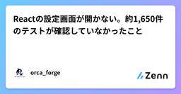
Reactの設定画面が開かない。約1,650件のテストが確認していなかったこと  Zennの「品質」のフィード
Zennの「品質」のフィード
📝 この記事は forge.workstyle.tech に掲載した記事の転載です。 画面を描画しない単体テストは、Reactのフックの順番が崩れたときの描画エラーを確認できません。設定画面では早期returnの後ろにuseStateが置かれ、「このセクションを表示できませんでした」と表示されました。そこでフック用lintと、設定の各セクションを開くスモーク確認を追加しました。 Reactの設定画面が開かなかった原因は、早期returnの後ろにuseStateが置かれ、フックの順番が崩れていたことでした。ソース内の文字列を確かめるテストや画面を描画しない単体テストでは、この不具合を検出で...
8時間前

遅いテストを速くする Zennの「Test」のフィード
この記事は JJUG CCC 2026 Fall 「遅いテストを速くする」の登壇資料です. AIによって生成した音声概要. 不正確な情報や音声の乱れが含まれる場合があります. Agentic coding の普及によって開発者テストのあり方が変わってきています. 開発者テストはAIエージェントが書いたコードを保証するためにますます重要になり, なおかつ手間のかかるテストの作成をAIエージェントに任せられるようにもなりました. これまで以上に自動テストが肥大化しているだけでなく「全てE2Eテストでよい」といった主張まで見られるようになってきています. こうした変化によって新たな課題がうまれ...
10時間前

AIが「直りました」と言った。その修正、採っていい？ Zennの「Test」のフィード
AIにエラーを渡し、修正を頼む。しばらくすると、差分と一緒に「直りました。テストも通っています」と返ってくる。 実行すると、確かに動く。でも、変更されたコードを全部説明できるほど詳しくはない。このまま採ってよいのか、もう一度AIに聞くべきなのか。そこで手が止まる人へ向けた記事です。 まず、「何ができれば採るか」を書き、その条件を実際に確認した結果があるかを見るところから始めます。今回なら「合計が105になる」に加えて、「指定した呼び方を守る」ことまで必要です。同じ105を返す二つの修正でも、この条件を置くと採否が分かれます。 この記事では、Pythonの小さな関数でその違いを自分で確かめ...
11時間前
11/27 (金)
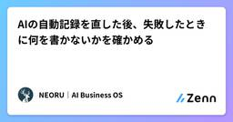
AIの自動記録を直した後、失敗したときに何を書かないかを確かめる Zennの「Test」のフィード
今回見直したいのは、修復後に成功したかに加えて、失敗したときに何を書かずに止めるかだ。 ダッシュボード開発の作業結果を、AIが取得してGoogle Sheetsへ記録する。その処理を確かめるとき、正常に取得できた例だけを見ていると、入力が欠けた場面の扱いが残る。 構築時の検証記録には、存在しないページの取得で書き込みを行わない試験と、同じ入力を再処理しても既存の記録キーを維持する試験が残っている。 外部ページを取得できなかった場合、返ってくる情報は、正常に取得できた空の一覧とは意味が違う。 記事の取得を例にすると、ページが見つからないこと、通信に失敗したこと、公開された記事が見つからない...
1日前

SmartHRの「フロントシステム」の品質保証は、なぜ一言で語れないのか —— むずかしさに向き合う現場の取り組み 1 QA - SmartHR Tech Blog
1 QA - SmartHR Tech Blog
こんにちは。SmartHRの品質保証本部で、人事・給与基幹（以下、人給基幹）領域のフロントシステムエリアのQAL（QA Lead）を担当しているt.leafです。 「エリア」とは、SmartHRの人給基幹領域の開発組織が取り入れているScrum@Scale（スクラムを複数のチームに広げるための組織運営の枠組み）の考え方にもとづく単位で、関連するプロダクトを担当する複数のスクラムチームをまとめたものです。各エリアにはエリアPO（プロダクトオーナー）とエリアEM（エンジニアリングマネージャー）がいて、チームをまたいだ優先順位や課題をエリアとして扱っています。 組織の仕組みについては、次の記事で詳し…
1日前
E2Eが通っても安心できない。利用者役のAIが開発環境を一周するAgentic UAT Zennの「Test」のフィード
こんにちは、MJです。株式会社ビズリーチの AI Product Studio（以下、APS）で、AIを前提にした開発プロセスづくりに取り組んでいます。 AIが利用者と対話しながら進めるサービスでは、変更を加えるたびに、画面が動くだけでなく、利用者の返答に応じて会話が進み、目的を果たせるかまで確かめる必要があります。 ただ、AIとの対話は、同じ目的でも質問や返答、その後の展開に幅があります。人が利用者役になり、状況や答え方を変えて何度も会話するには手間がかかります。AIを使う開発では変更も速くなるため、そのたびに人が会話を一通り試す方法では、検証が追いつきにくくなります。 そこで、検証す...
1日前
11/26 (木)
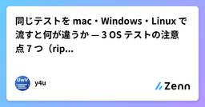
同じテストを mac・Windows・Linux で流すと何が違うか — 3 OS テストの注意点 7 つ（ripgrep と並べた記録から Zennの「Test」のフィード
UwView（ユーダブリュービュー） は、巨大なログ・テキストを開いて探す Windows・macOS・Linux 用のビューアです。画面は Avalonia UI、中身は .NET 10（C#）で、画面と同じ検索エンジンを使うコマンド（無料版は uvf、有料版 UwView Pro は uvp）も付いています。速さはいつも ripgrep と並べて測っています。 問い: 同じテスト一式を mac・Windows・Linux で流すと、何が違ってくるのか。 答え: 違うのは速さより先に「測り方」でした。キャッシュを空にする手順（cold）は OS ごとに別物で、Windows では黙って...
2日前
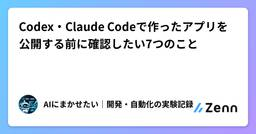
Codex・Claude Codeで作ったアプリを公開する前に確認したい7つのこと Zennの「Test」のフィード
AIコーディングエージェントの活用によって、個人でもアプリやWebサービスを開発しやすくなりました。 一方で、実装が完了したことと、実際の利用者に向けて公開できる状態になったことは同じではありません。 現在、私はAIを活用した事業づくりに取り組んでおり、企画・開発・品質確認・販売戦略の役割を分ける運用を試しています。 その中で採用している方針の一つが、AIによる作業と、人間による重要な判断を分けることです。 この記事では、その考え方を踏まえ、個人開発や小規模なWebサービスの公開前後に確認したい7つの観点を整理します。 特定のフレームワークに依存しない基本的な確認方法です。記載する具体例...
2日前
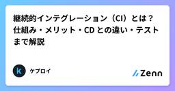
継続的インテグレーション（CI）とは？仕組み・メリット・CD との違い・テストまで解説 Zennの「Test」のフィード
継続的インテグレーションは、開発者たちが「インテグレーション地獄（integration hell）」と呼んでいた問題への解決策として始まりました。メンバーそれぞれが自分のブランチで 3 週間作業し、リリースの 2 日前にまとめてマージしようとするチームを想像してください。各ブランチは単体では問題なく見えていました。ところが一つにまとめた途端、どの変更が原因なのか誰にも追えない形でビルドが壊れてしまいます。 解決策は拍子抜けするほどシンプルです。小さな変更を頻繁にマージし、その一つひとつを機械にチェックさせること。この習慣が、チームの働き方を静かに変えていきます。コードレビューは小さくな...
2日前

フォルダのツリーを非同期にしたら、古い結果の入り口が増えた ― 守りを層ごとに外して試す Zennの「Test」のフィード
Markdown を A4 の PDF にする Windows アプリ「Markdown PDF君」(Tauri 2・Rust と WebView2)に、左側の「フォルダ」をツリーにする機能を足しました(v1.1)。 前の記事の11章では、平らな一覧で「調べている途中に別のフォルダの文書を開くと、遅れて届いた古い一覧が新しい一覧を上書きする」問題と、受付の番号(チケット)と世代で防いだ話を書きました。 ツリーにすると、この「遅れて届いた古い結果」の入り口が一気に増えました。フォルダごとに、開いたときだけ調べるので、調べがいくつも同時に走り、その間に使う人は閉じたり開いたり [更新] を押...
2日前
OTPテストが不安定なとき、先に切り分けるべきはアプリではなく受信箱だ Zennの「QA」のフィード
この記事は、公開されている製品ページとAPIドキュメントを整理したアイデアです。内部実装やベンチマークには触れていません。検証コード付きのサインアップやパスワードリセットが「たまに落ちる」とき、原因をアプリに寄せすぎていないか、という切り分けの話です。 チーム用のGmailを一つ用意して、OTPフォルダで運用するやり方はよく見ます。手元のテストランナーはコミットごとに新しくなっても、受信箱だけは残り続けます。その結果、次のような失敗が一つの赤いステップに折りたたまれます。 別ジョブが先に同じ未読メールを開いた 前の環境のメールを、今の実行のメールだと読んだ アプリは送っているが、見ている...
2日前
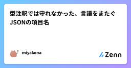
型注釈では守れなかった、言語をまたぐJSONの項目名 Zennの「Test」のフィード
社内向けの管理画面を作っていたとき、PythonとTypeScriptの両方にテストがあるのに、その間の項目名を誰も確かめていないことが分かりました。 もともとPython製のworkerがあり、そこへTypeScriptの管理画面を追加した構成です。画面からの操作も既存workerと同じ処理・状態遷移を通す方針で、画面用に処理をもう一組作ることは避けていました。 管理APIがworkerの応答をJSONとしてそのまま画面へ渡し、画面は型定義を頼りに読みます。たとえば、Pythonが返す stagingUrl を、画面も同じ名前で読む構成です。 AIエージェントがセルフレビューで片側の項...
2日前
KikuviのAIインタビュアーをLLMで評価する仕組み Zennの「Test」のフィード
Kikuvi で AI エンジニアをしている大越です。Kikuvi の AI インタビュアーを、LLM を使って評価する仕組みを作ったので、紹介します。 Kikuviは、AIが対話形式でヒアリングを行い、集まった回答を分析するサービスです。ユーザーインタビューや、社員の声を集めるためのヒアリングなどに使われています。 ヒアリングを作る人は、質問や時間配分を画面で設計します。AI インタビュアーは、この設計に沿って質問しながら、回答に合わせて質問を重ね、話を深掘りします。たとえば次の画面では、セクションごとに想定時間を決め、「理解度が3以下だった人にだけ、分かりにくかった点を詳しく聞いて」...
2日前
JSTQB(ソフトウェアテスト技術者資格認定組織)は、Advanced Level シラバス テストアナリスト Version 4.0.J01を適用した資格認定試験を期間限定で開始しました 特定非営利活動法人ソフトウェアテスト技術振興協会【プレスリリース】 by PR TIMES
[特定非営利活動法人ソフトウェアテスト技術振興協会]JSTQB(ソフトウェアテスト技術者資格認定組織)は、Advanced Level シラバス テストアナリスト Version 4.0.J01を適用した資格認定試験を、2026 年 11 月 25 日（水）から2027 年 2 月 24 日（水）までの期間限定...
2日前

【第2回】事業会社QAに自由はあるのか。テスト会社は不自由なのか。 品質 | Sqripts
前回の記事では、テスト会社と事業会社、テスト自動化ツールの会社という3つの業態を経験してきた私自身の経歴をご紹介しつつ、「テスト会社の内外で言われていること」についていくつか取り上げました。 今回はその中でも、「テスト会...The post 【第2回】事業会社QAに自由はあるのか。テスト会社は不自由なのか。 first appeared on Sqripts.
2日前

Androidアプリの複数バージョン検証で、毎回やっている確認項目を整理した（10・11・12・15） Zennの「QA」のフィード
小さなチームでAndroidアプリのリリース前確認をするとき、私が毎回使っているチェック項目をまとめました。端末はクラウドの実機環境（私が仕事で関わっている DuoPlus を使っています。利害関係があるので先に書いておきます）でも、手元の実機でも同じように使える内容にしています。 全部のバージョンを見るのは現実的ではないので、私は次の4つに絞っています。 Android 10：サポート対象の下限として Android 11：スコープ付きストレージや権限まわりの差分確認 Android 12：通知・スプラッシュ画面まわりの差分確認 Android 15：最新の挙動確認 ユーザー分布によっ...
3日前
Androidアプリの複数バージョン検証で、毎回やっている確認項目を整理した（10・11・12・15） Zennの「Test」のフィード
小さなチームでAndroidアプリのリリース前確認をするとき、私が毎回使っているチェック項目をまとめました。端末はクラウドの実機環境（私が仕事で関わっている DuoPlus を使っています。利害関係があるので先に書いておきます）でも、手元の実機でも同じように使える内容にしています。 全部のバージョンを見るのは現実的ではないので、私は次の4つに絞っています。 Android 10：サポート対象の下限として Android 11：スコープ付きストレージや権限まわりの差分確認 Android 12：通知・スプラッシュ画面まわりの差分確認 Android 15：最新の挙動確認 ユーザー分布によっ...
3日前

PostgreSQL の権限は「設定した」ではなく「数えた」にする ― 誰も GRANT していない関数を、ログイン前のロールが実行できた Zennの「Test」のフィード
権限を「migration に書いた GRANT」で把握していたら、誰も GRANT していない関数 3 つをログイン前のロールが実行でき、RLS（行ごとのアクセス制御）が効いているテーブルは 17 本中 3 本だった。どのテストも赤くなっていない PostgreSQL は、書いていない権限を既定で足す。関数は作った時点で PUBLIC（すべてのロール）に EXECUTE が付く。さらに、新しいテーブルに自動で権限を付ける設定（ALTER DEFAULT PRIVILEGES）を入れたスキーマでは、GRANT を書かなくても CRUD（読み書きの 4 権限）が付く。GRANT 文は「足し...
3日前
11/25 (水)

筆算エンジン:掛け算・割り算の形と、学習指導要領で決める範囲 Zennの「Test」のフィード
前回の記事では、足し算と引き算のテストケースを作りました。今回は、掛け算と割り算のテストケースを作った話です。 掛け算と割り算は、足し算・引き算より決めることが多くありました。どこまでの大きさの数を扱うかも、ここで決める必要がありました。 割る数を何桁まで扱うかについては、文部科学省の学習指導要領(平成 29 年告示)を基準にしました。本文に「筆算」の語が出てくる項目は次のとおりです。 このほかに、3〜5 年で小数の計算があります。5 年の小数の割り算は、7.2÷2.4 を 72÷24 とみて計算します。6 年には、新しい筆算はありません。 この範囲から、エンジンの上限を次のように決めま...
3日前
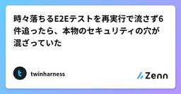
時々落ちるE2Eテストを再実行で流さず6件追ったら、本物のセキュリティの穴が混ざっていた Zennの「Test」のフィード
自動テストが時々落ちたとき、もう一度回して通ったら「PC が混んでいただけだろう」と流していないでしょうか。テストが1回30分近くかかるようになると、その誘惑はかなり強くなります。 Windows 上で Electron の自作ブラウザを作っていた約3週間、私は Playwright を使った E2E テストと実機テストで、時々落ちるテストに6件出会いました。再実行で流さずに全部の原因を追うと、4件はテストツールや待ち時間などテスト側の問題でした。残りの2件は、Windows の挙動に絡む本物の不具合と、危険なコマンドがクリップボードに残る本物のセキュリティの穴でした。 この記事では、6...
3日前
AIコーディングエージェントがテストを「通す」ためにやる5つのずると、その見つけ方 Zennの「Test」のフィード
AIコーディングエージェントに「このテストが落ちているので直して」と頼むと、テストが緑になって返ってきます。ところが中身を見ると、直されたのはアプリのコードではなくテストのほうだった、ということがあります。 私自身、エージェントが失敗しているテストを「直す」ために、テストそのものを書き換える場面を何度も見ました。差分をざっと眺めただけでは気づきにくく、あとで本物のバグとして返ってきます。 この記事では、私がよく見かけるパターンを5つに分けて、それぞれの例と、手元で見つける方法をまとめます。 Claude Code、Cursor、Codex などのコーディングエージェントにテストの修正を任...
3日前

AIエージェントの企業導入で何が変わるのか？ ― 要件定義・受入テスト・運用から考える Zennの「Test」のフィード
従来の業務システムと同じ要件定義やテストの進め方で、AIエージェントを本番稼働させてもよいのでしょうか。 受入テストの合格基準をどう設定するのか。想定外の動作をしたとき、誰が、どのように止めるのか。企業でAIエージェントを使うには、こうした課題も考える必要があります。 私はこれまで、基幹システムの導入に20年、ソフトウェアの設計・開発に8年携わってきました。 AIエージェントについては現在学習中で、開発・導入の実務経験はなく、実機による検証も行っていません。 本記事では、公式資料とこれまでのシステム導入経験をもとに、AIエージェントを企業に導入する際の課題や、導入前に確認しておきたい判断...
3日前

保存した黒塗りをPNGのピクセルで確かめる  ソフトウェアテストタグが付けられた新着記事 - Qiita
ソフトウェアテストタグが付けられた新着記事 - Qiita
スクリーンショットに矢印を足し、見せたくない文字を黒く覆います。ひとまず画面を見て、隠れたことを確認します。編集中の画面を目で見れば、今その場所が黒いことは分かります。あとでファイルを開いたときも黒いかは、保存した画像を使って自動テストで確かめます。個人開発の「スクショ...
3日前

【第4回】AI時代に、「場」を通してつながる④～わがままの行き先～│専門家2人による往復書簡 品質 | Sqripts
山下さんへ 山下さん、第3回の書簡をありがとうございます。そして本を読んでくださったこと、本当にうれしかったです。 「経済的交換」と「社会的交換」の話には、思わず膝を打ちました。私が「お金で清算しない」と言い続けてきたこ...The post 【第4回】AI時代に、「場」を通してつながる④～わがままの行き先～│専門家2人による往復書簡 first appeared on Sqripts.
3日前

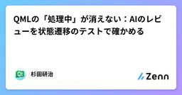
QMLの「処理中」が消えない：AIのレビューを状態遷移のテストで確かめる Zennの「Test」のフィード
AIにQMLの差分を見せたところ、「その代入でバインディングが解除されるので、処理開始時に表示が仕様と食い違います」と指摘されたとします。 バインディングの説明は正しくても、表示が食い違う時点まで正しいとは限りません。処理開始時はどちらも「処理中」と表示され、完了後になって初めて違いが現れる場合があります。 この記事ではSRAの技術記事「QMLの表示が『処理中』のままになる理由」を基に、仕様、コード、操作後の表示を照合する方法を紹介します。Qtの資料は2026年11月21日に確認しました。AIへの依頼文と回答例は説明用です。 状態をそのまま表示するQMLを考えます。 textはcontr...
3日前

AIに開発を任せる前に、AIに会社を教える — 組織ナレッジと、工程を横断させるレビュー Zennの「Test」のフィード
AIに開発を任せたときの出力の確かさを決めるのは、モデルの賢さではありませんでした。AIがその組織をどれだけ知っているか、そして工程のどこまでを通しで見せているか、の2つです。 AIが外すのは、組織の事情を知らない場所です。 そして欠陥が見つかるのは、工程と工程の継ぎ目です。 以前、プライベートでコードを書いていたときのことです。AIにコードを生成させると、いつも無難な案に落ち着きました。間違ってはいません。ただ、自分が実現したかったことは、結局叶いませんでした。 いま振り返ると、理由は単純でした。AIは、その場で渡された文脈しか知りません。文脈が無ければ、どこでも通用する一般解を返すし...
3日前
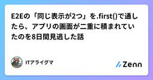
E2Eの「同じ表示が2つ」を.first()で通したら、アプリの画面が二重に積まれていたのを8日間見逃した話 Zennの「Test」のフィード
個人開発しているAndroidアプリ「終業ログ」は、始業・終業の打刻と、終業時のチェックリストを記録するアプリです。React NativeとExpo Routerで作っていて、ホーム・履歴・設定のタブと、タブの外に置いた終業チェックや記録の編集などの画面があります。CIでは、Web版を書き出してPlaywrightでE2Eテストを流しています。 10月16日に、E2Eテストが「同じ表示が2つ見つかった」という理由でときどき失敗するようになり、テスト側で1つ目を選ぶように直しました。8日後の10月24日に、Androidの戻るキーを押してもアプリが閉じない不具合を調べていて、その「2つ」...
3日前
11/24 (火)

ソフトウェアテストを検査しよう【Advanced編】 Go!Go!Gomaznさんのフィード
本記事はスクフェス三河2026で発表した内容を元に再構成した内容です。 ちなみに動画は以下。 なお、本記事はアジャイル実践者（もちろんここにはテスターも含まれます）が、さらに一歩深めるための【Advanced編】として執筆しています。 基礎的な考え方から紐解けるような、なんならより実戦で活用できる【ビギナー編】については別記事として公開したいと思っています。 また、昨年のスクフェス三河2025で発表した「透明性」に関する記事の続編とも言える位置づけになっていますので、以下の内容もぜひご覧ください。 ソフトウェアテストが持つ「透明性」の側面 やまずん - テストを使って透明性を獲得しよう ...
4日前
ソフトウェアテストを検査しよう【Advanced編】 Zennの「QA」のフィード
本記事はスクフェス三河2026で発表した内容を元に再構成した内容です。 ちなみに動画は以下。 なお、本記事はアジャイル実践者（もちろんここにはテスターも含まれます）が、さらに一歩深めるための【Advanced編】として執筆しています。 基礎的な考え方から紐解けるような、なんならより実戦で活用できる【ビギナー編】については別記事として公開したいと思っています。 また、昨年のスクフェス三河2025で発表した「透明性」に関する記事の続編とも言える位置づけになっていますので、以下の内容もぜひご覧ください。 ソフトウェアテストが持つ「透明性」の側面 やまずん - テストを使って透明性を獲得しよう ...
4日前
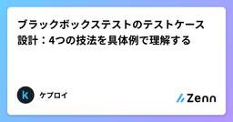
ブラックボックステストのテストケース設計：4つの技法を具体例で理解する Zennの「QA」のフィード
この記事は、Keploy ブログに英語で公開された Black Box Testing and White Box Testing: A Complete Guide の日本語訳です。 ブラックボックステストは、ソフトウェアの振る舞いを外側から評価します。テスターは内部のコードを知らないまま入力と出力を検証するため、機能テストや受け入れテストに適しています。ホワイトボックステストは、内部のコード、ロジック、構造を直接調べ、外からは見えないセキュリティの脆弱性やロジックのエラーを見つけます。成熟したチームのほとんどは両方を使います。ブラックボックスでユーザーが体験することを、ホワイトボック...
4日前


炎上案件をレスキューせよ！——炎上案件を鎮火させ、プロジェクト再建へと導く4つのステップ 品質 | Sqripts
こんにちは、QAコンサルタントのヒイロです。 IT業界に身を置いて30年。システム開発の最前線から、保守・維持管理、サービスマネージャー、そして現在はQA（品質保証）コンサルタントとして、数多くのプロジェクトを渡り歩いて...The post 炎上案件をレスキューせよ！——炎上案件を鎮火させ、プロジェクト再建へと導く4つのステップ first appeared on Sqripts.
4日前
11/23 (月)

半自律的にテスト活動を遂行するAIエージェントプラグイン公開【アプリもwebもテスト可】 1 Zennの「QA」のフィード
仕様とテストするアプリを渡すと、テスト計画 → テストケース作成 → テスト実行 → 不具合報告 → 不具合確認や追加テスト → テストレポートまでのテスト活動をAIエージェントが柔軟に進めてくれるClaudeのプラグインを作りました。 ▶実際にテスト活動を行い出力されたテストレポート 要求仕様の整理からリスク分析、テスト計画、分析・設計、テストケース作成、E2E自動テストのスクリプト作成、テスト実行、不具合報告、テストレポートまで、全部を遂行します。また新しい発見があったり、変更があったりしたときはそれに合わせテストを追加など柔軟に対応します。ただ、人がそのテスト活動が妥当か、結果が妥...
5日前

メール認証を E2E テストの状態遷移として設計する Zennの「QA」のフィード
本稿は公開されている画面・説明を手掛かりにしたテスト設計の提案であり、特定サービスの内部実装、配信基盤、性能、SDK の挙動を示すものではない。メール認証を E2E で扱うとき、受信箱を「外部の画面」ではなく、状態遷移の観測点にする。 共有アドレスを使うと、並列実行した別シナリオのメール、前回のリンク、運用通知が同じ場所に混ざる。「最新のメール」を取得する実装は、たまたま成功した別のメールを選ぶ余地を持つ。 TempMail AI のような一時的な受信先を使う場合も、目的は単にアドレスを増やすことではない。1 シナリオに 1 受信箱を対応させ、どの入力がどの観測結果につながったかを追える...
5日前
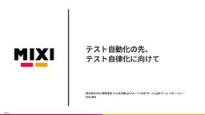
テスト自動化の先、テスト自律化に向けて 3 Matsu
Matsu
AIが「テストを1000件実行して問題ありませんでした」と報告してきて、それを信じてリリースできるでしょうか？この発表では、AIにテストを任せるためにどういったことを決めれば良さそうなのかの話をしています。
5日前
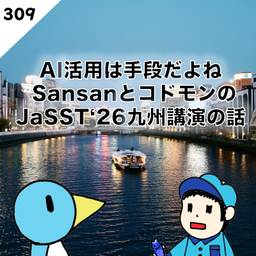
第309回テストラジオ AI活用は手段だよね ― SansanとコドモンのJaSST’26九州講演の話 #テストラジオ
テストラジオ
▼参考リンク ・JaSST’26 Kyushu：（http …
5日前
11/22 (日)
JaSST’26 Kyushu に参加しました。  pikazakipika
pikazakipika
JaSST’26 Kyushuに参加しました。行き慣れた福岡ファッションビルだったのに、なぜか天神に行ってしまって（福岡在住です）、道を間違うとかいうレベルじゃなく遠回りしてしまったけど、参加して良かった。 JaSST’26 Kyushu 開催概要 - JaSSTjasst.jp 続きをみる
6日前
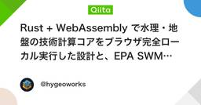
Rust + WebAssembly で水理・地盤の技術計算コアをブラウザ完全ローカル実行した設計と、EPA SWMM・ACADS 等 69 件の数値検証 ソフトウェアテストタグが付けられた新着記事 - Qiita
はじめに土木・水理・地盤分野の技術計算ソフトウェア（擁壁の安定照査、円弧すべり解析、カルバート水理、調整池の水位追跡、2次元氾濫解析など）では、次の 3 つの技術要件が常にトレードオフになりがちです。数値再現性と監査可能性：同じ入力に対して環境を問わず同一の結果を...
6日前
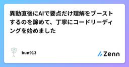
異動直後にAIで要点だけ理解をブーストするのを諦めて、丁寧にコードリーディングを始めました Zennの「QA」のフィード
こんにちは。特撮熱が爆上がり中のbun913と申します。 皆さんは異動や転職の直後に「早くキャッチアップしなきゃ」と焦った経験はありませんか？私はあります。 私はQAエンジニアとして働いており、2026年10月に部署を異動したのですが、異動先のプロダクトはこれまで担当していたものとはまったく異なるため、ドメイン知識を一から覚え直す必要がありました。 最初は、重要そうな箇所や疑問をもったところだけピンポイントでAIに解説してもらい、効率よく理解を深めようと工夫していました。ですが、それではどうにも納得感が得られず、書籍「部下としてのAI」をきっかけに、時間をかけてでもコードを丁寧に読むこと...
6日前

JaSST'26 Kyushuで学んだこと ソフトウェアテストタグが付けられた新着記事 - Qiita
はじめに2026年11月20日に開催された「JaSST'26 Kyushu」に参加しました。学びを忘れないように、印象に残った内容を記録します。スポンサーセッションポールトゥウィン株式会社のスポンサーセッションでは、AIの活用による学習機会の変化や、既存の教育に...
6日前

曖昧な受け入れ基準が招く「話が違う」を、工事立会いの経験から考える Zennの「QA」のフィード
Zennのトレンドに上がっていた「堅牢な受け入れテストを書くには？」という記事を読んで、真っ先に思い出したのは工場の床だった。私は機械メーカーの営業として2006年から2009年まで名古屋で働き、設置工事の立会いと顧客との検収調整を担当していた。ソフトウェアの受け入れテストは、仕様を満たしているかを機械的に検証する作業として語られることが多い。しかし現場の検収は、もう少し人間臭いものだった。契約書や仕様書には「正常に稼働すること」「ちゃんと動くこと」といった言葉が普通に書かれていて、それをめぐって現場で解釈がぶつかる。合格基準が曖昧なまま工事が終盤に差し掛かると、顧客側の担当者と自分たち...
6日前